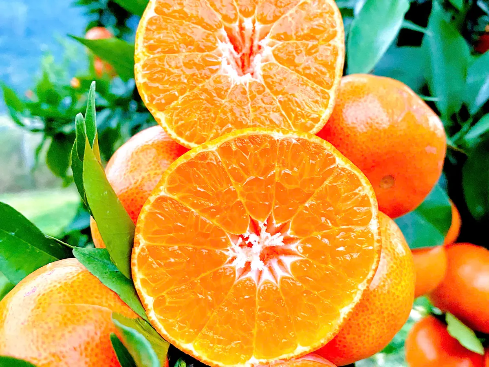

Cam Đường Canh nhỏ hơn cam sành, vỏ mỏng, múi mọng và ngọt đậm. Vài mẹo dưới đây giúp bạn chọn được quả ngon, dù mua ở chợ hay đặt online.
1. Nhìn vỏ
Quả chín đều trên cây thường có vỏ màu cam đậm hoặc cam hơi đỏ, bóng nhẹ, da căng mịn. Vỏ có vài đốm nâu nhỏ tự nhiên là bình thường. Tránh quả vỏ nhăn nheo, mềm nhũn hay có chỗ thâm dập.
2. Cầm thử
Chọn quả cầm thấy nặng tay so với kích thước, đó thường là quả nhiều nước. Bóp nhẹ thấy hơi đàn hồi là vừa; quá cứng có thể chưa chín tới, quá mềm có thể đã để lâu.
3. Xem cuống
Cuống còn tươi, lá đi kèm còn xanh là cam mới hái. Cuống khô đen, rụng hẳn thì cam đã để nhiều ngày.
4. Chín cây hay chín ép?
Cam chín tự nhiên trên cây có màu chuyển từ từ, đôi khi còn vệt xanh nhẹ gần cuống, vị ngọt đậm có chút chua thanh. Cam vàng đều tăm tắp nhưng ăn nhạt có thể đã hái non rồi xử lý cho đổi màu.
5. Bảo quản để cam tươi lâu
- Mở thùng ngay khi nhận, nhặt riêng quả dập (nếu có) ra ăn trước.
- Để nơi thoáng mát, tránh nắng; không đóng kín trong túi nilon.
- Muốn để lâu hơn thì cho vào ngăn mát tủ lạnh.
Cam của nhà mình trồng tại vườn đạt chứng nhận VietGAP ở Lạng Sơn, chỉ hái khi đã chín trên cây, thu hoạch khoảng tháng 11 âm lịch đến tháng 1 năm sau. Hàng hư do vận chuyển được đổi mới hoặc hoàn tiền, xem chính sách đổi trả.